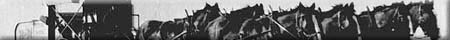
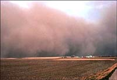
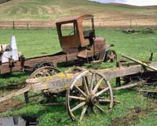

|
|

|

|
|

|
The 1930s
During the 1930s, an economic depression, combined with years of
drought and the everpresent wind, forced
some farmers to leave their farms. In many cases, crop failures diminished
agricultural incomes to the point that they did not cover agricultural
expenses. Others persevered and continued
to develop the Saskatchewan agricultural industry.
|

What was referred to as The Depression in the rest of the world
was called the Dirty Thirties on the prairies. For nine years
farmers had to combat a variety of adverse conditions.
- drought
- insect infestations
- erosion
- low prices
The blustery winds of the prairies, combined with extreme drought of the thirties,
created horrendous dust storms that people
who lived through it will never forget. The surface soils of sections of land were lifted and deposited several metres deep in ditches and dried-out sloughs.
|
The southern part of Saskatchewan suffered more than the northern
part. The drought emphasized Palliser's prediction that Palliser's
Triangle was a desert-like environment. The area north of
a line along the Qu'Appelle River; Saskatoon ; North
Battleford area still produced average to good crops.

All Saskatchewan producers, however, were affected by the shortage
of money and low prices for produce. Farmers left the land, abandoning
over 2,000,000 cultivated acres. Some resettled in the northern
parkland. Some farmers depended on the government for support,
called relief. Many farmers returned to using horses. Some used
horses to pull motorless family cars.
|
|
|
|
|
|